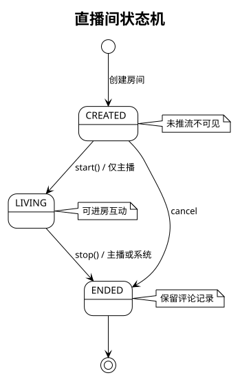
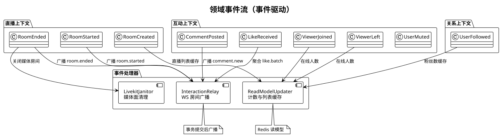
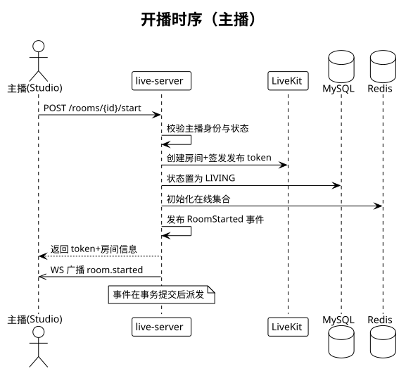
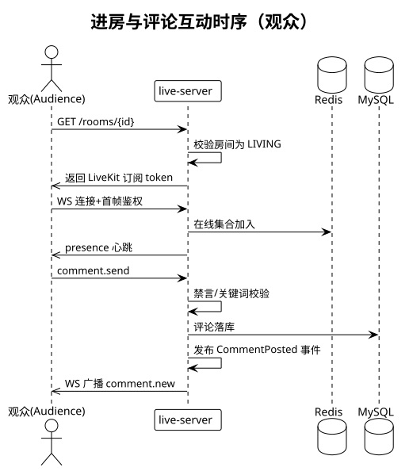

版本：v1（第一期） · 2026-11-09 · 配套《结构文档》《实现文档》
每个限界上下文内部分四层，包命名固定：
<context>/
├── api/ # Controller、WS endpoint、DTO（入站适配器）
├── application/ # Application Service：编排用例、开事务、发事件
├── domain/ # 聚合、实体、值对象、领域服务、领域事件、Repository 接口
└── infrastructure/ # Repository 实现、Redis/LiveKit 适配、事件总线实现
硬性规则：
聚合：User（userId 为根）
聚合：Follow（followId 为根，业务唯一键 followerId+followeeId）
聚合：LiveRoom（roomId 为根）

uk_anchor_living 过滤索引）。进房（观众）：不走聚合修改，application 校验房间 LIVING 后签发订阅 token 并发布 ViewerJoined。
Comment（实体，按房间会话分片）
MuteRecord（实体）：roomId+userId 维度，until 绝对时间；禁言判定在 post 路径同步查 Redis 缓存。
LikeCounter（领域服务）：无聚合实体，Redis INCR 原子累加房间总赞数；1 秒窗口聚合 delta 后发布 LikeReceived（广播 like.batch）。设计理由：点赞是高频写、弱一致场景，落聚合只会制造热点行。
PresenceTracker（领域服务）：WS 连接建立/断开维护 Redis 房间在线集合（SADD/SREM+过期兜底），5 秒心跳聚合发布 ViewerJoined/ViewerLeft（广播 presence.heartbeat）。
| 事件 | 发布者 | 关键负载 | 订阅者（第一期） |
|---|---|---|---|
| UserRegistered | User | userId, nickname | ReadModelUpdater |
| UserFollowed / UserUnfollowed | Follow | followerId, followeeId | ReadModelUpdater |
| RoomCreated | LiveRoom | roomId, anchorId, title | ReadModelUpdater |
| RoomStarted | LiveRoom | roomId, startedAt | InteractionRelay（广播） |
| RoomEnded | LiveRoom | roomId, endedAt | InteractionRelay、LivekitJanitor |
| CommentPosted | Comment | commentId, roomId, userId, content | InteractionRelay |
| LikeReceived | LikeCounter | roomId, total, delta | InteractionRelay |
| UserMuted | MuteRecord | roomId, userId, until | InteractionRelay（定向） |
| ViewerJoined / ViewerLeft | PresenceTracker | roomId, onlineCount | InteractionRelay、ReadModelUpdater |
事件载体统一 envelope：{eventId, type, occurredAt, payload}；occurredAt 用 UTC；事件不携带可变大对象（如长文本正文限制 500 字内，传输够用）。

ApplicationEventPublisher + @TransactionalEventListener(phase = AFTER_COMMIT)。进程内、零基础设施；事件处理器异常不影响主流程（异步线程池，失败重试一次后记日志）。SETNX event:handled:<id>（24h 过期），防重复广播（如 WS 重连补发场景）。开播：

进房与评论：
